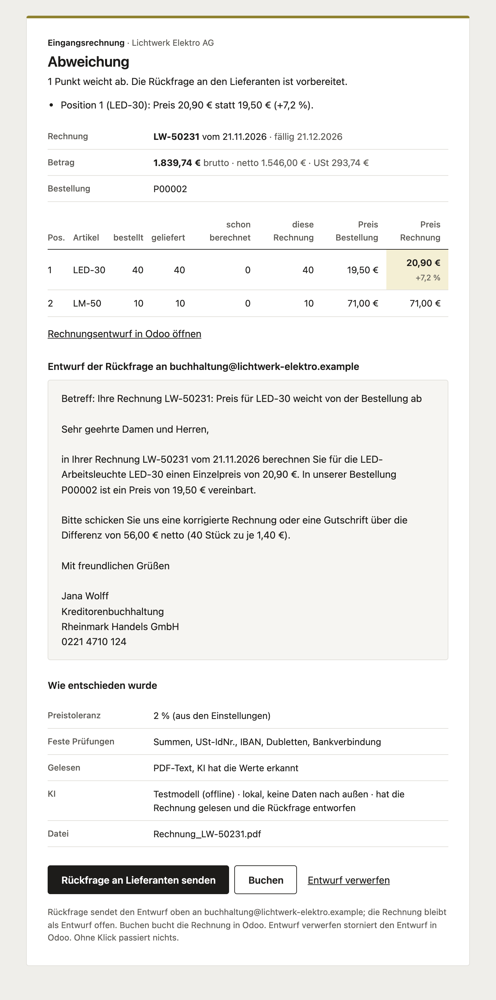
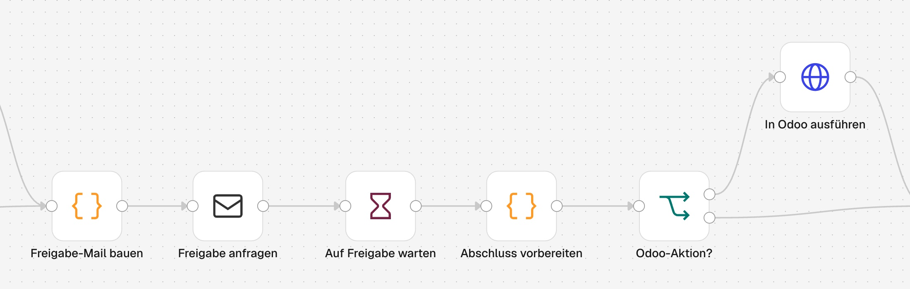
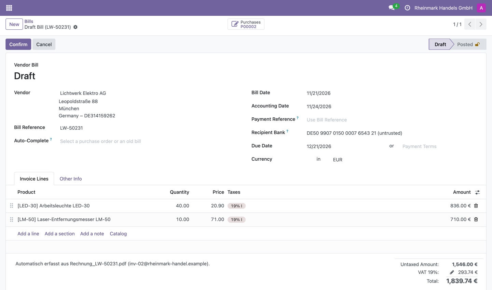

Supplier invoice and complaint automation for Odoo
Reads incoming e-mails, checks them against Odoo with fixed rules, prepares the booking and waits for one click from a person. Tested end to end with 12 supplier invoices and 8 customer complaints, using a stand-in AI with prepared answers; the rules, Odoo bookings and mails are real.

What it does
Two automations for a small wholesale business. People keep working where they already are: in their mailbox and in Odoo.
Supplier invoices
- Reads XRechnung and ZUGFeRD through Odoo's own importer, PDFs with AI, paper scans with OCR first
- Matches every line against purchase order and goods receipt (3-way match)
- Stops duplicates, unknown suppliers and changed bank accounts
- Drafts the vendor bill and, on a difference, a query to the supplier
Customer complaints
- Finds the order, the product and the delivery date in Odoo
- Decides by rule: replacement, credit note, refusal outside warranty, or a question back
- Prepares the replacement order or credit note as a draft in Odoo
- Writes the reply in German or US business style and checks it for AI phrasing
How it works
The AI only reads and writes. Fixed rules decide, the arithmetic is exact, and nothing is booked or sent before a person clicks.
Supplier invoices
- Invoice e-mailPDF, XRechnung, ZUGFeRD or a scan arrives in the invoice mailbox
- ReadE-invoices by Odoo itself, without AI. PDFs by the AI, scans by OCR first
- Check and matchSums, VAT ID, IBAN, duplicates, bank account; order, receipt and invoice line by line
- A person clicksBook, send the drafted query to the supplier, or discard
Customer complaints
- Customer e-mailArrives in the service mailbox, in German or English
- AI reads itOrder number, product, what went wrong, what the customer wants
- Rules decideWarranty for business or private customers; draft in Odoo; reply written and style-checked
- A person clicksApprove: book and send. Reject: cancel the draft
Everything runs on one machine: n8n for the workflows, Odoo 18 Community, a local mailbox and OCR. The AI is a setting: a local model, a cloud provider, or the AI key already set up in Odoo. With a local model, no customer or supplier data leaves the machine.
Built in n8n and Odoo
Real screens from the running demo, not mock-ups.
Where the person comes in
Build the approval mail, send it, wait for the click, then act in Odoo
Part of the invoice workflow (48 steps in n8n). Open the whole workflow (one wide image)

The draft vendor bill in Odoo, linked to purchase order P00002
Odoo's interface runs in English here; the company data is German
Tested with 20 documents
Every case was run end to end: from the mailbox to the approval mail to the result in Odoo. In these runs the AI step was a local stand-in that returns prepared answers; Odoo, the rules, OCR, the mails and the bookings ran for real. Not yet run with a real model. The table shows the expected verdicts. An earlier run gave all twelve; in the run behind the screenshots three differ because the invoices were checked in parallel (see Limits).
| Supplier invoice | Result |
|---|---|
| Matches order and receipt | Booked |
| Price 7.2 % above the order (tolerance 2 %) | Query |
| 30 invoiced, 20 received | Query |
| Same invoice number again | Stopped |
| "New bank account" | Stopped |
| No order number: matched to the only fitting open order | Booked |
| Printed total 10 € too high | Query |
| Supplier not in Odoo | Stopped |
| XRechnung (XML), read by Odoo without AI | Booked |
| ZUGFeRD PDF, price 2.8 % above the order | Query |
| Scanned paper invoice, rotated and noisy | Booked |
| The same XRechnung sent a second time | Stopped |
| Customer complaint | Result |
|---|---|
| Drill does not charge (business customer) | Replacement |
| Display cracked on arrival, wants money back: credit of 141.61 € | Credit |
| Wrong item delivered | Replacement |
| Drill broken after 3 years (warranty 24 months), paid repair offered | Refused |
| Flickering light, written in English: reply in US English | Replacement |
| No order number, writes "du": order found by sender address; rejected in approval, draft cancelled | Replacement |
| Vague complaint, unknown sender: asks for order and product | Question |
| Two scratched safety glasses: credit of 23.56 €. The prepared first reply breaks the style rules on purpose; the style check caught it and the corrected reply was used | Credit |
Design decisions
- Rules decide, the AI only reads and writes. A model can be confidently wrong; sums, check digits, tolerances and the warranty are plain arithmetic that gives the same answer every time.
- Approval happens in the mailbox. Accounts and customer service already work there, so there is no new app to learn and every decision arrives with its reasons.
- E-invoices go through Odoo's own importer. XRechnung and ZUGFeRD carry structured data; Odoo Community already reads them, so nothing is guessed and nothing is rebuilt.
- A changed bank account is a hard stop. A "new IBAN" e-mail is one of the most common invoice frauds, so the invoice is not even drafted, and the mail says to call a number already known.
The video
43 seconds, no sound. The same flow as the walkthrough.
Limits of this demo
- A fictional company, tested with 8 complaints and 12 invoices. The AI step was a local stand-in that returns prepared answers; local models (Ollama, LM Studio) and cloud keys are one setting away but have not been tested with these cases.
- When several invoices arrive in the same minute, they are checked in parallel. In the run behind the screenshots, three verdicts differ from the expected ones above: LW-50288 found two open orders instead of one, and the original and the copy of RE-2026-1187 swapped roles.
test/run_invoices.pysends them one at a time and compares every verdict. - The approval buttons are signed links that act on a click (HTTP GET). Mail security scanners that open links could trigger them, and the mail does not record who clicked. A real setup would put a confirmation page with a POST behind each button and log the approver.
- Odoo errors are not checked after each call yet, and the calls run as the Odoo admin. A real setup needs a dedicated integration user with an API key and a run that stops on any Odoo error.
- The mailbox is local. A real mailbox (IMAP, Microsoft 365, Gmail) means swapping the inbox step in n8n.
- The e-invoice test files follow the standards' structure but were not run through the official validators.
About this project
InboxToOdoo is a portfolio project by Sam Zeidi, Information Systems student (Wirtschaftsinformatik) at Universität zu Köln. I am looking for a Werkstudent role in AI automation, business processes or Odoo in and around Cologne.
What I designed and decided: the process (which checks run, when the automation stops, what a person has to approve), the rules and tolerances, the Odoo demo company with its orders and deliveries, the 20 test cases, and the approval mails and forms.
Live demo or code walkthrough on request
Code: github.com/samaistudio/InboxToOdoo. Clone it and run ./install.sh --demo (needs Docker and Python 3): Odoo 18 Community, n8n, a test mailbox and OCR start locally.